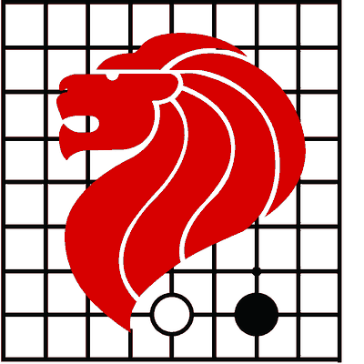
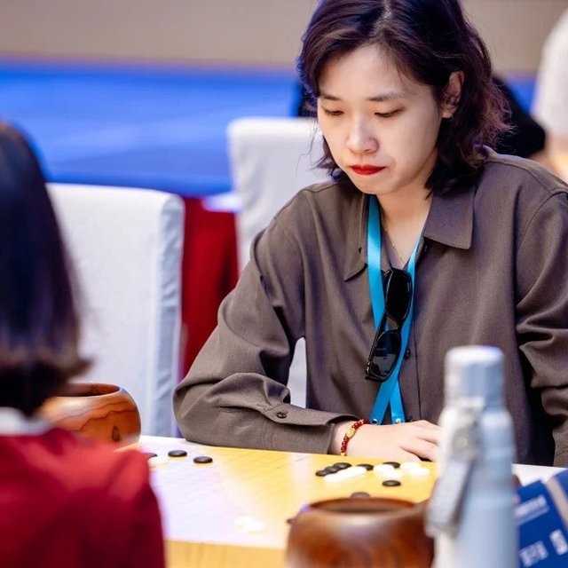
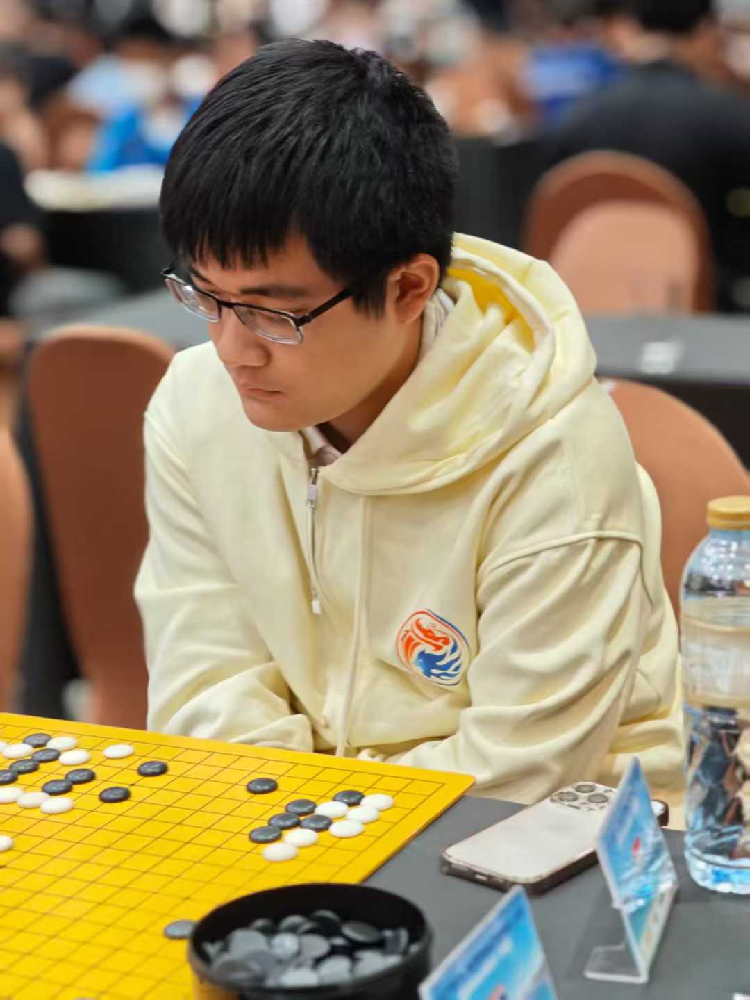
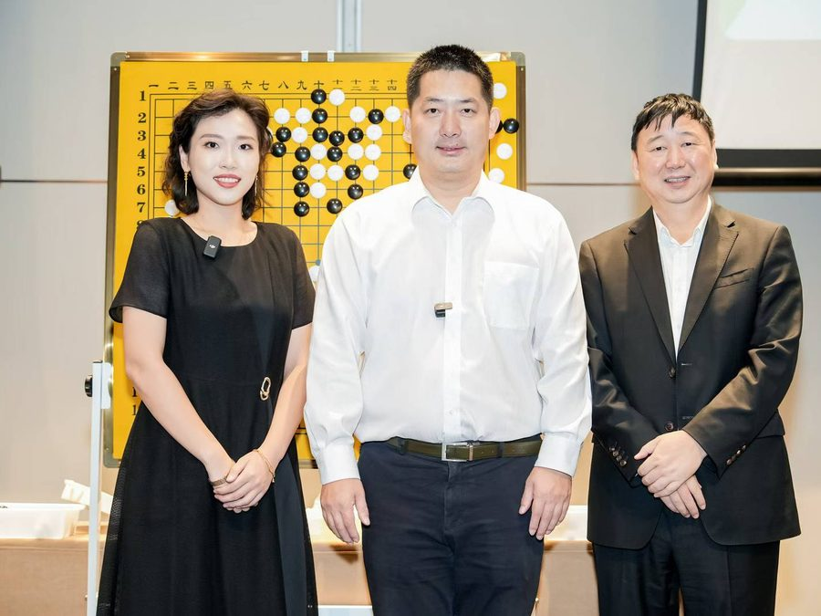

01
专注力Focus把注意力留给眼前这一手。Give the next move your full attention.
新加坡 · 小裴围棋课室SINGAPORE · XIAO PEI GO ACADEMY
让孩子慢下来，想深一点。
在黑白之间学会专注，在每一次落子中独立思考。
从第一颗棋子开始，陪伴每一份热爱慢慢生长。A little more focus. A little deeper thinking.
Discover the joy of Go, one thoughtful move at a time.
For curious children, complete beginners and lifelong learners.
认真思考的样子，真好。A thoughtful moment. A small step forward.

由新加坡围棋协会秘书裴令令老师创办 · 七年围棋教学与组织经验Founded by Ms. Pei Lingling, Secretary of the Singapore Weiqi Association · 7 years of teaching and organizing experience
认识新加坡围棋协会 ↗Visit SWA ↗SMALL MOVES. LIFELONG SKILLS.
把注意力留给眼前这一手。Give the next move your full attention.
多想一步，让选择有理有据。Look ahead and reason through each choice.
胜负之后，学会复盘与再出发。Learn from each game and try again.
同一方棋盘，发现不同的可能。Find new possibilities on the same board.
从好奇开始，向热爱进阶。
无论年龄与棋力，都能找到自己的学习节奏。Begin with curiosity. Grow at your own pace.
There’s a place here for every age and level.
面向 三岁以上零基础学员。从认识棋盘、落子与提子开始，在互动与对弈中，慢慢喜欢上思考。For beginners aged 3+. Discover the board, learn to place and capture stones, and find the fun in thinking for yourself.
了解启蒙课程Explore beginner classes从基础棋形到全局判断，系统提升棋力。结合孩子的学习节奏与 DSA 目标，一起规划更长远的成长。Develop stronger shapes and whole-board thinking, with a learning plan that considers your child’s progress and DSA goals.
咨询进阶课程Discuss the next step由业余五段老师带领对局分析与实战训练，在复盘中发现盲点，为本地及区域赛事做好准备。Review games and sharpen your play with Amateur 5-Dan instructors. Build match experience for local and regional tournaments.
了解提升课程Explore advanced training班型、课时与费用，可直接向老师咨询。还不确定选哪一课？先来一节免费试听。Ask us about formats, schedules and fees. Unsure where to begin? Try a free introductory class.
我们真实的课堂时光Little moments from our classroom
在新加坡淡滨尼东，我们用一方棋盘，连接不同年龄的好奇心。小裴围棋课室由新加坡围棋协会秘书裴令令老师创办，与多位业余五段老师一起，陪伴 三岁以上的学员学习围棋。
我们重视棋力，也重视每一次思考的过程。初次拿起棋子的孩子、想突破瓶颈的棋手，都可以在这里找到同伴，走好自己的下一步。
In Tampines East, a Go board brings curious minds of all ages together. Founded by Ms. Pei Lingling, Secretary of the Singapore Weiqi Association, our classroom welcomes learners aged 3 and above, guided by Amateur 5-Dan teachers.
We care about how students think as well as how they play. From a child’s first stone to an experienced player’s next breakthrough, there is room to learn and grow here.
由新加坡围棋协会秘书亲自执教与把关教学体系。Led by the Secretary of the Singapore Weiqi Association.
多位业余五段老师任教，教学与赛事组织经验丰富。Taught by multiple Amateur 5-Dan instructors with years of teaching and tournament experience.
三岁以上零基础到业余选手均可入学，因材施教。For ages 3 and above, beginners to amateur players, with a curriculum tailored to each level.

创始人 · 新加坡围棋协会秘书Founder · Secretary, Singapore Weiqi Association

新加坡科技设计大学围棋社社长 · 中国业余五段President, SUTD Go Club · Chinese Amateur 5-Dan
新加坡科技设计大学前任围棋社社长 · 中国业余五段Former President, SUTD Go Club · Chinese Amateur 5-Dan

围棋，古称「手谈」。不用急着懂所有规则，和孩子一起，在这方九路棋盘上感受黑白之间的乐趣。Go is a conversation without words. You don’t need to know every rule to begin — sit with your child and explore this 9×9 board together.
从国际邀请赛，到与常昊九段共同解说世界大学生锦标赛决赛；从赛事组织，到日常教学。我们把这些经历，带回孩子身边。From international invitationals and championship commentary with Chang Hao 9-dan to tournament organizing — experience that finds its way into everyday teaching.
欢迎实地参观。看看孩子们如何学棋，
也和老师聊聊属于你的第一堂课。Come visit our classroom, see learning in action,
and talk to us about your first lesson.
264 Tampines Street 21
#01-114 · 新加坡 淡滨尼东Tampines East, Singapore
来访前请先联系老师，方便安排接待与试听。Please message us before visiting so we can arrange a time.
送给好奇心，一节免费试听课。
告诉我们学员的年龄与围棋基础，
其余的，交给老师一起安排。A free trial class for a curious mind.
Tell us the student’s age and experience,
and we’ll help find the right starting point.
Blk 264, Tampines Street 21, #01-114
新加坡 淡滨尼东Tampines East, Singapore